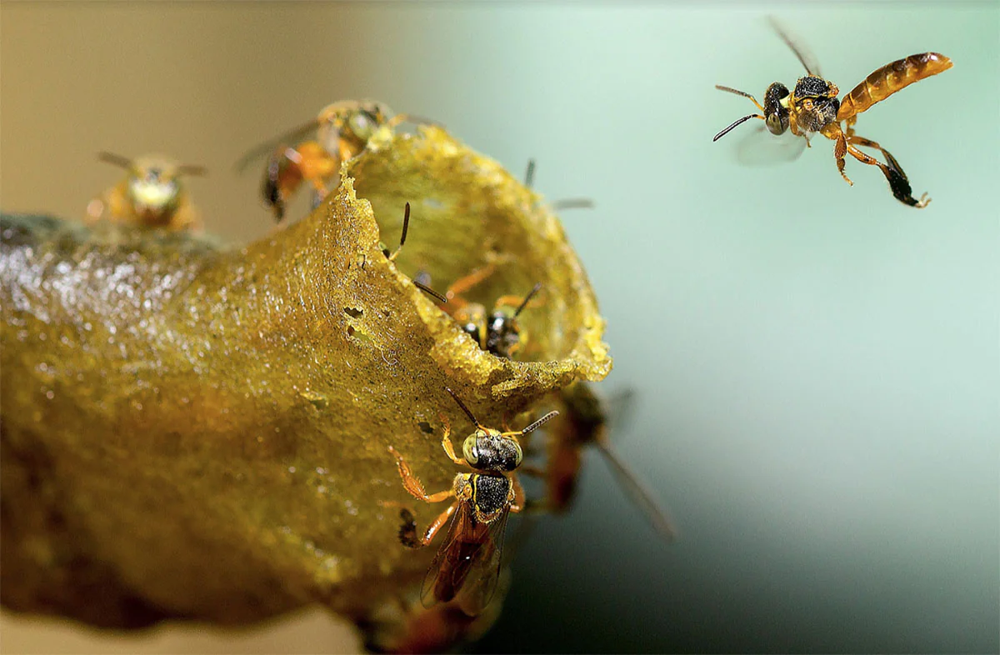
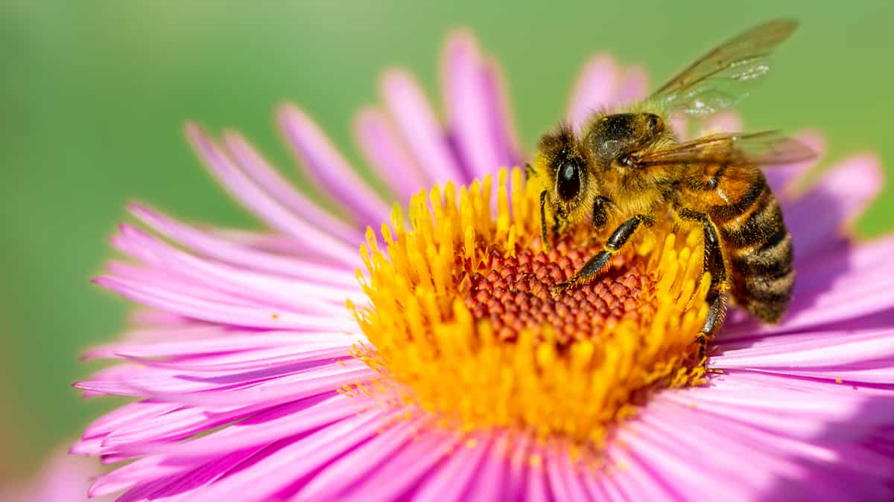

O que preciso saber sobre as abelhas?
As abelhas são insetos, apresentando assim corpo dividido em cabeça, tórax e abdome. O corpo delas é revestido por exoesqueleto, o qual possui algumas regiões cobertas por pelos. Essa estrutura evita a perda de água e também protege contra predadores.
Qual é o predador natural da abelha?
Vertebrados predadores de abelhas incluem aves como os abelharucos; insetos incluem besouros (abelheiro), vespas e libélulas.
Qual é o inimigo das abelhas?
aTraças da cera São o pior inimigo das abelhas, causando grandes estragos às colmeias. Podem provocar, inclusive, o abandono da colmeia pelas abelhas, quando a infestação é maior. Recomenda-se inspecioná-las regularmente para que seja possível eliminar as primeiras traças que aparecerem.
Porque as abelhas são importantes para o ser humano?
As abelhas são responsáveis pela polinização de plantas e são amplamente reconhecidas como as mais importantes para essa função em escala global”, explica Carolina Matos, ecóloga do Centro de Agroecologia e Serviços Ambientais (DSA/CATI).
Qual a altura máxima que uma abelha voa?
As operárias normalmente voam entre 5 e 10m de altura (Jean-Prost, 1985) e poucas vezes sobrepujam os 8m, voando o mais baixo possível, para se resguardarem do vento (Rootner, citado por Root, 1990). Desde que Frisch et al.
A sociedade das abelhas
A sociedade das abelhas é constituída por castas, as quais apresentam funções bem definidas. As colônias formadas pelas abelhas podem apresentar até 80.000 indivíduos. Desses, apenas um é a rainha, sendo a maioria operária e a outra parcela constituída por zangões. A seguir apresentamos as funções de cada casta.
Rainha
Essa abelha apresenta quase o dobro do tamanho das operárias, sendo a única fêmea fértil da colmeia. Assim, a sua função, além de manter a organização social da colmeia por meio da liberação de feromônios, é a postura de ovos. A liberação dos feromônios, produzidos pelas glândulas mandibulares, informa, por exemplo, a presença e a ação de uma rainha na colmeia.
A rainha apresenta um maior tamanho devido à sua alimentação diferenciada – a geleia real, que é mais rica em nutrientes – desde o período larval até o fim da vida. Cerca de 5 a 9 dias após o nascimento, a rainha está pronta para o voo nupcial, quando ocorre a fecundação. Esse processo acontece em áreas onde estão presentes de centenas a milhares de zangões.
A rainha atrai os zangões com a liberação de feromônios e pode ser fecundada por até 17 zangões. A cópula ocorre em pleno ar. O sêmen é armazenado em uma estrutura denominada de espermateca e é utilizado para a fecundação de óvulos durante toda a vida da rainha, pois esse é o único voo nupcial realizado por ela.
A postura dos ovos acontece de 3 a 7 dias depois do acasalamento. A rainha pode pôr até 3.000 ovos por dia, dependendo da disponibilidade de alimento. Ela pode viver cerca de 3 a 4 anos.
Embora a rainha não saia mais para um voo nupcial, caso a colmeia se torne muito populosa, ela pode sair com algumas operárias e alguns zangões para buscar um novo local para habitar. Antes mesmo da saída da rainha, as operárias preparam o nascimento de uma nova rainha. Quando as princesas nascem, as operárias e a rainha deixam a colmeia.Operárias
Apresentam órgãos de defesa bastante desenvolvidos e que lhes permitem a realização de diversas atividades. A função dessa casta é a realização de todo o trabalho dentro da colmeia, como a produção de alimento, higienização, defesa e até manutenção da temperatura. As operárias não apresentam órgãos reprodutores desenvolvidos. Isso acontece devido a uma alimentação mais pobre em nutrientes e também graças aos feromônios liberados pela rainha.
Zangões
São maiores que as operárias, mas não apresentam estruturas para o trabalho e nem ferrão. Apresentam órgãos olfatórios, sensoriais e musculatura bem desenvolvidos, bem como asas maiores, o que lhes permitem encontrar a rainha no voo nupcial. A função dos zangões é fecundar a rainha. Após a cópula, seu órgão genital fica preso na rainha e, ao tentar se soltar, este se rompe, ocasionando a morte do zangão.
Abelhas nativas ou abelhas sem ferrão (ASF)
já viviam no Brasil muito antes das espécies estrangeiras aportarem por aqui. Também conhecida como “melíponas”, elas povoam diversos biomas do território brasileiro com mais de 300 espécies. Elas se alimentam do pólen que tiram das flores e formam seus ninhos em buracos ocos de troncos das árvores.
As abelhas nativas são muito dependentes da preservação da mata em que estão e uma colônia pode até morrer se for retirada da árvore em que está instalada. Por isso, a vida de nossas abelhas está ameaçada pelo desmatamento. Uma das alternativas para a conservação das espécies nativas está na meliponicultura, que garante a criação racional de abelhas sem ferrão.
Estes são os principais tipos de abelha que produzem mel:
Quantos tipos de abelha que tem?
São mais de 1.500 espécies, a maioria solitárias. Também somos ricos em espécies sociais, com destaque para as abelhas sem ferrão que possuem mais de 300 espécies.
